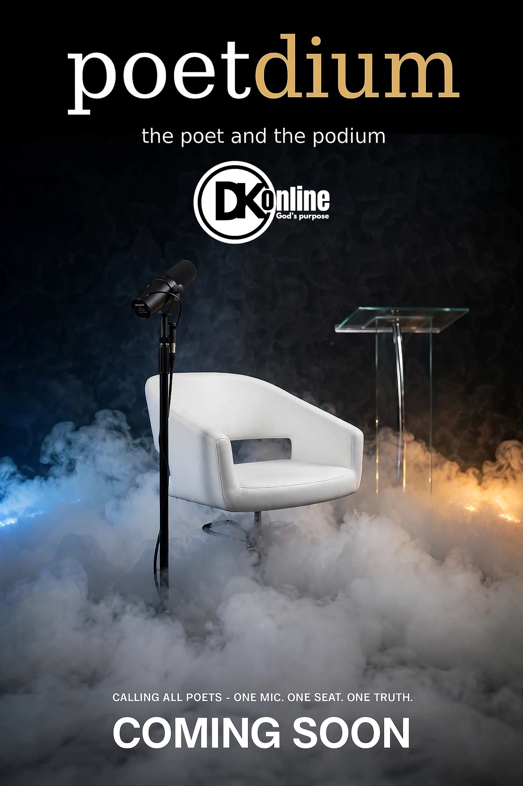

Poetdium is an envisioned platform to raise the hidden.
The name Poetdium is a creative conjoining of Poet and Podium — The Poet and The Podium — inspired by Steve Dankan (Steve Nana Kankam Asiedu) to bring all talented poets into a standard.
Poetdium Season 1: One chair, one mic, one truth. A live spoken word stage in Accra, Ghana where hidden poets are raised to a standard.
The poet and the podium. One chair, one mic, one truth.

Your bio here. 2 lines. Style, city.
Your bio here. 2 lines. Style, city.
Your bio here. 2 lines. Style, city.
Fill this and we will contact you for audition.
If form doesn't load, click here to open in Google Forms
Or WhatsApp us directly: DK Online